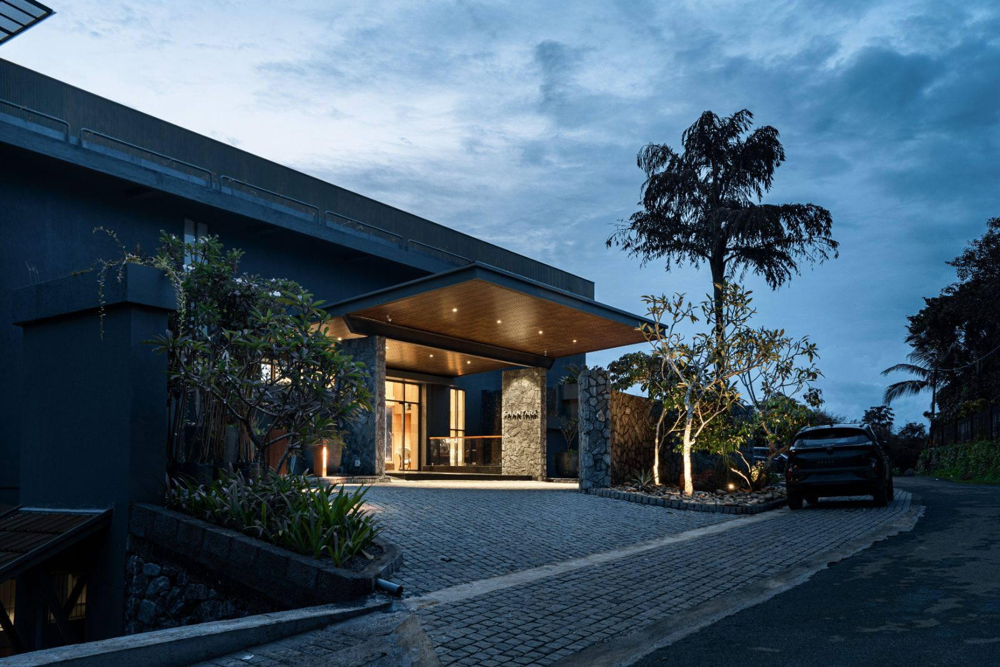

Tone of imagery
Blooming in nature
Architecture read against weather and planting. Deep greens, warm concrete, monsoon light. Wide, unhurried frames with real air in them — never a stock-wellness close-up, never a saturated sunset.
Privacy rule
Guests are never identifiable. No faces in treatment, no room numbers, no arrival shots. Figures appear at distance, as scale, or not at all — a condition of admission, not a style choice.



Type sits on a scrim,never bare glass
Do · crop to architecture and horizon lines. Let green dominate. Keep the pattern off photography — one or the other, never both.
Don't · no filters, no teal-orange grade, no faces in therapy, no text without
--scrim-bottom or --glass-fill behind it.